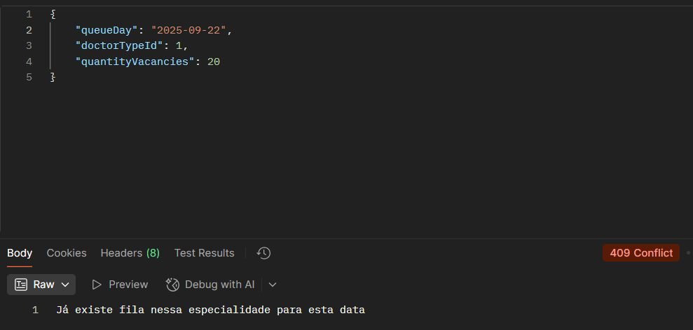

Atributos:
queueDay: String. Data no formato yyyy-mm-dd.
doctorTypeId: Um número tipo inteiro que deverá corresponder ao id da especialidade criada existente.
quantityVacancies: Um número inteiro que representará a quantidade de vagas ofertadas.
Retornará 201 em caso que a persistência de dados seja bem sucedida.

No caso de tentar criar a fila na mesma especialidade para a mesma data, retornará o 409.
